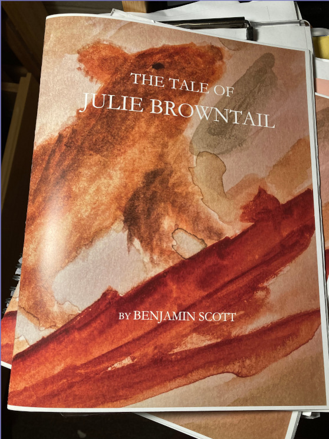

The Tale of Julie Browntail
Here's the PDF if you don't want to read anything else about it before seeing it.
I made a fully illustrated children's picture book about bone physiology.
I took a class called Endocrinology during the spring semester of 2022. Part of the final project was to research the mechanism through which testosterone produces a certain physiological response. I chose to research testosterone's effects on osteoblast (bone building cell) activity and growth. I produced the diagram you see below.
We also were required to write a children's book explaining the core ideas of our mechanism at a 3rd grade level. We weren't required to illustrate it ourselves, but I enjoy watercolors and so I decided to make my own paintings.

I was inspired by the picture books of Beatrix Potter, though she painting animals with more anthropomorphism while my squirrels are more realistic. The story is illustrated with 17 of my watercolors, counting the cover. If you'd like to see the pictures on this website without them being part of the ebook, click here for the gallery (warning: loads some rather large images).
I printed a few copies of the book (it's more like a magazine). The page size is a little big at 8.5x11. The color turned out pretty well.